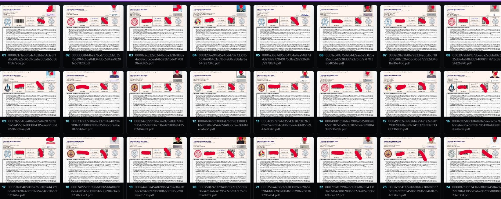
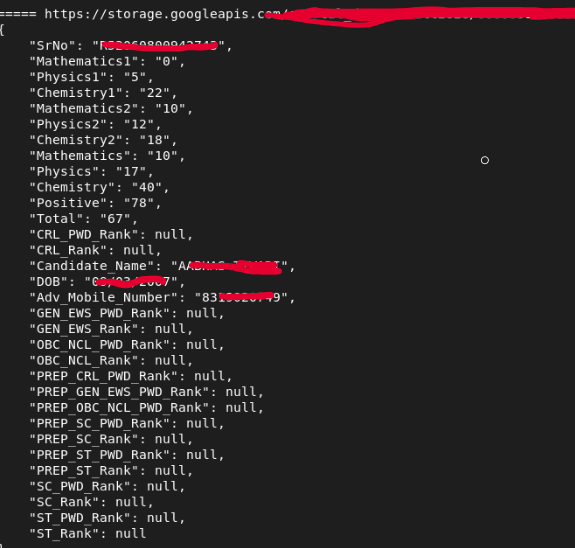

On June 2, 2026, between about 17:40 and 18:15 GST (13:40-14:15 UTC), I found a critical vulnerability affecting the JEE Advanced 2026 candidate and result infrastructure. The issue was not a login bypass or an application exploit. It was a cloud storage access-control mistake with very real consequences.
Where The Thread Started
I was looking at how the candidate/result portal handled static files and storage-backed paths. One harmless request to a non-existent object returned an error message that revealed the backend storage bucket name. That was the first important clue: the application was exposing implementation detail from the storage layer.
From there, I checked whether the bucket was only leaking its name or whether access controls were also misconfigured. A small, limited listing request showed that unauthenticated users could enumerate objects under result and admit-card prefixes.
What Was Exposed
The exposed storage paths included result JSON records, admit-card redirect HTML files, and admit-card PDFs. A result record contained fields such as candidate name, date of birth, mobile number, serial or roll identifiers, subject marks, total score, positive score, and rank-related fields.
My impact count at the time of reporting was:
- 179,694 result JSON records exposed
- 187,389 admit-card redirect HTML files exposed
- 187,390 admit-card PDFs exposed


Why It Was Critical
The issue did not require credentials, cookies, a valid candidate session, or access to the portal UI. Any unauthenticated internet user who knew how to query the storage endpoint could list and download sensitive candidate files in bulk.
That combination matters: public listing plus public read access turns a storage bucket from an internal backend dependency into a data exposure surface. In this case, the data included personal information and exam-related records for a large number of students.
The Main Lesson
Cloud storage bugs often look boring until you measure the blast radius. A single leaked bucket name is not automatically a breach, but it is a signal worth following. If the bucket is listable, readable, and contains sensitive records, the impact becomes immediate.
The best version of this kind of work is quiet and precise: confirm the minimum evidence needed, avoid collecting unnecessary data, report quickly, and give the team a clear path to fix it.
Coverage
The disclosure and follow-up discussion were covered across national and regional outlets:
- Hindustan Times
- Deccan Herald
- India Today
- CNBC TV18
- Khaleej Times
- Firstpost
- NewsX
- NDTV
- The Economic Times
- Free Press Journal
- Gulf News
- Telegraph India
- Asianet Newsable
- Shiksha
- Manabadi
Original X post: x.com/DarthKermi72747/status/2061826579525984295